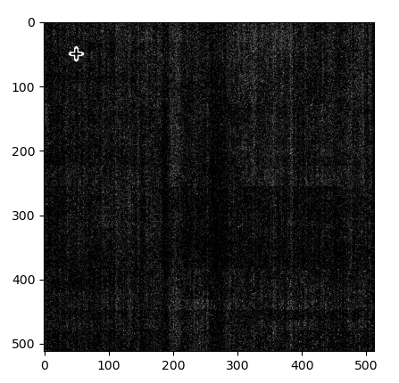

Draws a point in the given image.
draw_point(image, point)| image | AdornedImage | Input image. |
| point | Point | list | tuple | Point coordinates. |
| AdornedImage | A new image. |
All combinations of encoding and bit depth valid for AdornedImage are supported. The input image has minimum size of 256x256 pixels. The function returns a copy of the image, the original object is not changed.

The following example shows how to draw a point of interest in the acquired image:
# Acquire a full frame image
image = microscope.acquisition.acquire_camera_image(CameraType.BM_CETA, ImageSize.PRESET_4096, 1)
# Draw a point of interest
new_image = vision_toolkit.draw_point(image, (50, 50))